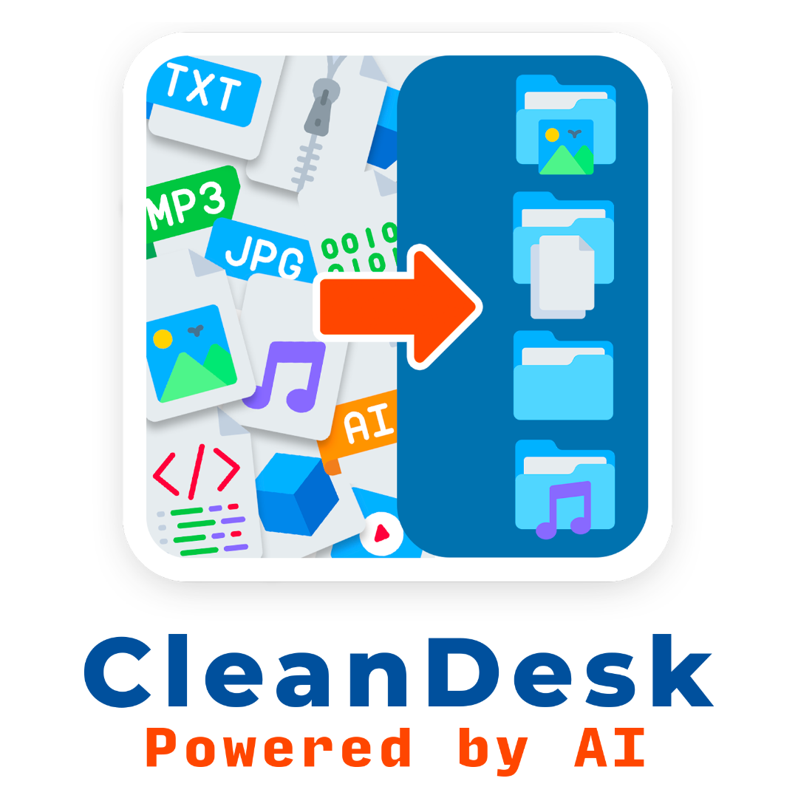

Polyglot NoSQL Platform
Engineered a polyglot persistence platform integrating MongoDB and Neo4j to process and query Big Data from the LDBC Social Network Benchmark.
The architecture leverages both document and graph models to optimize storage and retrieval based on the data's semantic structure.
https://github.com/AndCamo/NoSQL_Project

CleanDesk
A desktop application for Windows and macOS that uses artificial intelligence to transform any folder on a computer into an efficient and intuitive work environment.
https://github.com/AndCamo/CleanDesk